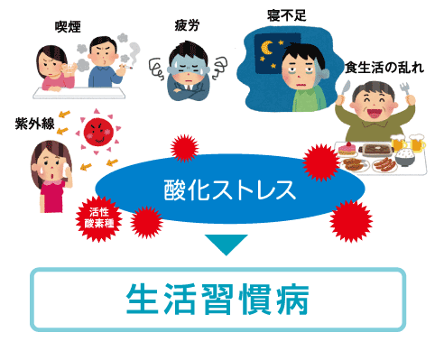
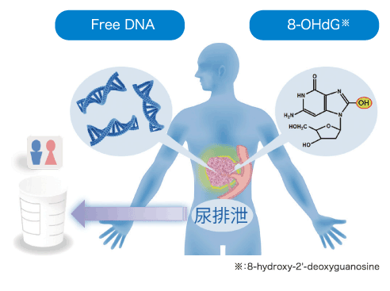
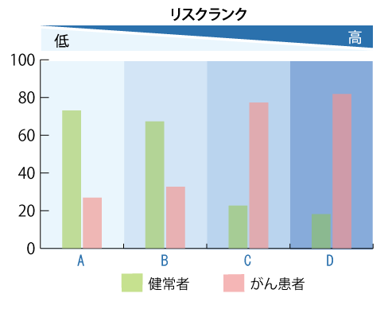

- 検査TOP
- 早期がん予知検査『CTC』
- 早期がん予知検査『CRAB-U』
早期がん予知検査『CRAB-U』

私達は日々の生活の影響（疲労、食生活の乱れ、寝不足、喫煙、紫外線など）により、体内に活性酸素を発生させ、ＤＮＡに大きなダメージを与えています。
活性酸素が発生し障害を起こしやすい状況下と、生体システムが直接活性酸素を解毒したり、生じた障害を修復する状況下との間で均衡が崩れた状態（酸化ストレス）が続くと、生活習慣病やがんを引き起こします。
この酸化ストレスを数値化し、生活習慣病やがんになるリスクを知る検査が、早期がん予知検査『CRAB-U』です。
早期がん予知検査『CRAB-U』では、活性酸素によって生じる不要なDNAと、組織が壊れた時に放出されたDNAを尿から採取し測定します。
活性酸素によって生じる不要なDNA
活性酸素によってDNAに損傷を負った細胞は、DNAの修復を行います。その際に不要となったDNAを細胞の外へ放出します。
そのDNAが8-OHdG(8-hydroxy-2'-deoxyguanosine)と言うDNAで通称、酸化ストレスマーカーと呼ばれています。
この酸化ストレスマーカーを測定する事で酸化ストレスを数値化します。
組織が壊れた時に放出されたDNA
細胞はDNAなどの修復が困難になると、自ら細胞を破壊します。その際、細胞内に存在していたDNAがFreeDNAとして遊離するのです。

検査の流れ
- 1.受付(問診)
- 2.採尿(20ml)
- 3.結果
検査費用45,000円
リスクについて
早期がん予知検査『CRAB-U』では酸化損傷DNAとFreeDNAの測定結果を総合的に評価し、がんのリスクを4段階で報告します。

- がんリスクは0.5未満で、がんになるリスクは高くないレベルです。
- がんリスクは1未満ですが、酸化損傷DNA、FreeDNAのいずれかの判定がCを超える場合は、なんらかのリスクが存在する可能性があります。
- がんリスクは1以上4未満となり、がんリスクはやや高いでベルです。
- がんリスクは7未満となりますが、がんリスクは高いレベルです。
上記がんリスク値は日本人の年間罹患率を「1」とした場合の数値です。
この検査では、必ずしもがんが存在することを示すものではありません。
生活習慣を改善するための指標としてご活用下さい。